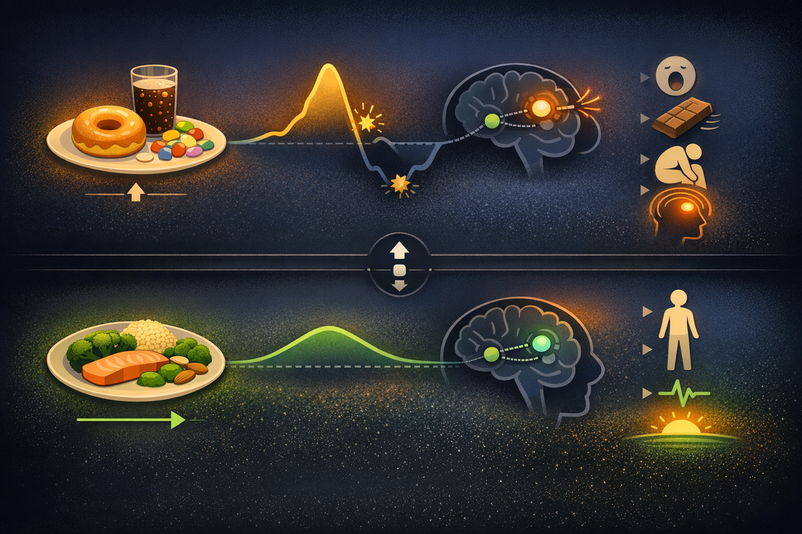

By Rustam Iuldashov
30 years lived experience with chronic migraine | Sources: 26 peer-reviewed references including Advances in Nutrition (network meta-analysis, n=6,616), Neurological Sciences (case-control, n=1,096), Journal of Pain Research (fMRI+PET, n=47), Brain (longitudinal fMRI) | Last updated: March 20, 2026
Medical Review: This content is based on peer-reviewed research from Journal of Pain Research, Journal of Neuroendocrinology, Cephalalgia, The Journal of Headache and Pain, Neurology, Nature Reviews Neurology, Brain, Annals of Neurology, Acta Biomedica, Frontiers in Neurology, The Journal of Pain, Headache, Neurological Sciences, Advances in Nutrition, Prostaglandins & Other Lipid Mediators, Acta Psychiatrica Scandinavica, NeuroImage, and Cells.
Important Notice: This article is for informational purposes only and does not replace professional medical advice. The author is not a licensed physician or healthcare professional. Always consult your doctor before making changes to your diet, supplementation, or treatment plan.
Key Takeaways
- Your brain’s dopamine reward system plays a direct role in migraine, especially during the prodromal phase when cravings, yawning, and mood changes signal an approaching attack.[1][4][7]
- Food cravings before a migraine are typically symptoms of an attack already in motion — not triggers. The hypothalamus is calling for energy and neurotransmitter support.[5][11][14]
- Blood sugar instability disrupts dopamine signaling and is linked to chronic migraine. Stabilizing glucose through regular, low-glycemic meals may reduce attack frequency.[15][17]
- Higher dietary tryptophan intake is associated with 54–60% lower odds of migraine — and tryptophan’s partner serotonin works alongside dopamine to stabilize reward circuits.[20]
- High-dose omega-3 supplementation outperformed all FDA-approved migraine medications in a network meta-analysis of 40 RCTs — partly by protecting dopamine receptor function.[21]
- A “Dopamine Diet” built on stable blood sugar, neurotransmitter precursors, omega-3s, and key cofactors offers a science-backed framework for protecting the brain circuits most vulnerable in migraine.[15][17][20][21]
Nine o’clock at night. You’re standing at the refrigerator, eating chocolate straight from the wrapper. Not hungry. Not bored. Driven — by a craving so focused, so insistent, it feels nothing like ordinary appetite.
Twelve hours later, the migraine arrives.
For decades, you blamed the chocolate. Doctors said avoid it. You kept lists of forbidden foods and felt guilty every time you gave in. But what if the chocolate didn’t start the migraine? What if the craving was the migraine — already unfolding inside your brain, hours before the pain hit?
New research on dopamine, the brain’s reward chemical, is rewriting our understanding of migraine and food. The implications reach far beyond chocolate.
Your Brain’s Reward System: A Migraine Player Hiding in Plain Sight
Migraine conversations usually center on serotonin and CGRP (calcitonin gene-related peptide, a protein that widens blood vessels and transmits pain signals). But a third player has quietly moved to center stage: dopamine.
Dopamine drives motivation, pleasure, and the urge to seek rewards. It’s the reason coffee feels necessary at 7 AM and a good meal feels satisfying at noon. In the migraine brain, though, dopamine behaves differently.[1][2]
Researchers describe the pattern as dopaminergic hypersensitivity — dopamine receptors that overreact between attacks.[1][3] This creates a volatile system, not an advantaged one. A 2021 study using both fMRI and PET imaging revealed that the nucleus accumbens — the brain’s core reward center — has altered wiring to the amygdala in people with episodic migraine. These altered connections tracked directly with dopamine D2/D3 receptor signaling, and correlated with both emotional suffering and pain severity.[1]
The reward circuitry and the emotional circuitry are cross-wired differently in migraine. Dopamine is the signal running through those wires.
The Prodrome: Your Hypothalamus Losing Control
The most dramatic evidence of dopamine’s role emerges in the prodromal phase — those hours or days before headache when something feels wrong. Excessive yawning. Mood shifts. Specific food cravings. Unexplained fatigue.
These aren’t random glitches. In a study of 461 migraine patients, 86.9% reported at least one premonitory symptom. Fatigue topped the list at 46.5%, followed by sound sensitivity at 36.4% and yawning at 35.8%.[4] Food cravings appear in roughly 30–40% of people with migraine during this window.[5][6]
Every one of these symptoms maps onto functions controlled by the hypothalamus — a walnut-sized brain region that regulates appetite, sleep, mood, and body temperature. The hypothalamus is dense with dopamine-releasing neurons.[7][8]
A landmark study by Schulte and May scanned migraine patients daily for 30 consecutive days, capturing spontaneous attacks as they began. Hypothalamic activity surged during the 48 hours before headache, with strengthened connections to brainstem pain circuits. Then, during the headache itself, hypothalamic activity collapsed.[9][10]
Think of it as an air traffic controller losing grip. The hypothalamus fires increasingly urgent signals — cravings, yawning, irritability — and then the system crashes into pain.
The Great Chocolate Myth
Here is where the science gets personal. Chocolate has topped “migraine trigger” lists for generations. But a 2020 review of 25 studies found the evidence does not reliably support that claim.[11] The confusion comes from mistaking sequence for cause.
During the prodrome, your hypothalamus pushes you toward calorie-dense, palatable foods — the brain attempting to stockpile energy before the metabolically demanding attack ahead.[5][12] Chocolate cravings may specifically reflect the brain reaching for magnesium (dark chocolate is rich in it) or the mood-altering compounds in cocoa.[5][13]
The American Migraine Foundation states it directly: the craving for chocolate is likely a sign that the attack has already begun, and the migraine would have arrived whether you ate it or not.[14]
Food still matters. But we’ve been reading the relationship backwards. The craving is the warning, not the weapon.
Blood Sugar: The Hidden Threat to Your Dopamine Stability
If dopamine drives prodromal cravings, what’s happening to metabolism underneath? A 2026 study using continuous glucose monitors on 131 chronic migraine patients found something striking: compared to healthy controls, people with chronic migraine had significantly greater blood sugar variability — sharper spikes after meals, more dramatic crashes between them.[15] A separate study showed that blood glucose rises significantly during migraine attacks compared to headache-free periods, with the increase most pronounced early in the attack.[16]
The “neuroenergetic hypothesis” proposes that migraine may stem from a mismatch between the brain’s energy demands and its fuel supply.[17] Your brain burns roughly 20% of your body’s total energy while accounting for only 2% of its weight. In migraine, impaired glucose metabolism may create a chronic energy shortfall that tips the system toward attacks — particularly after blood sugar drops sharply following a high-glycemic meal.[15][17]
The chain reaction runs straight through dopamine. Blood sugar crashes trigger stress hormones. Stress hormones disrupt dopamine signaling in the nucleus accumbens and hypothalamus — the same reward circuits already vulnerable in the migraine brain.[1][10] Disrupted dopamine destabilizes the hypothalamus. And the hypothalamus launches the prodromal cascade. Every link in that chain is influenced by what — and when — you eat.
⚠️ When to Seek Emergency Help
Sudden, severe dietary changes — such as extreme fasting, very low-carbohydrate diets, or dramatically increased supplement doses — can cause dangerous blood sugar fluctuations and may worsen migraine or cause other medical complications. Any migraine that is accompanied by confusion, vision loss, slurred speech, weakness on one side of the body, or a fever demands emergency evaluation. These symptoms may indicate a stroke or other neurological emergency, not a migraine.
If you are experiencing any of these symptoms, call your local emergency number immediately. Do not use this article to self-diagnose or to replace professional medical guidance on diet or supplementation.

Building Blocks: The Raw Materials Your Dopamine System Demands
Your brain manufactures dopamine and serotonin from amino acids in food. Dopamine’s precursor is tyrosine, found in almonds, avocados, chicken, bananas, and eggs. Serotonin’s precursor is tryptophan, found in turkey, salmon, nuts, seeds, and tofu.[18][19] Both neurotransmitters work in tandem to stabilize the reward circuits that go haywire in migraine — dopamine governs the craving-and-motivation loop, serotonin tempers pain signaling and mood.[1][7][24]
The tryptophan finding: A 2019 study of 1,096 participants — 514 migraineurs and 582 matched controls — found that people consuming higher dietary tryptophan had 54–60% lower odds of migraine compared to those with the lowest intake.[20] The protective range: 0.84–1.06 grams of tryptophan per day, achievable through a varied diet with protein, legumes, and seeds.
One detail matters enormously: tryptophan and tyrosine compete for the same transport channel into the brain.[19] The composition of your meal — the ratio of amino acids — determines how much raw material reaches the production line. This is precisely why complex carbohydrates are such a powerful partner: they trigger an insulin release that clears competing amino acids from the bloodstream, giving tryptophan a clear path across the blood-brain barrier. A meal of salmon with brown rice and vegetables, for instance, delivers tryptophan and the carbohydrate escort it needs to reach the brain.[18][19]
Omega-3s: The Finding That Surprised Researchers
The most striking nutritional result in migraine research may belong to omega-3 fatty acids. A 2024 network meta-analysis examined 40 randomized controlled trials with 6,616 participants, comparing EPA/DHA supplementation against every major FDA-approved migraine medication. High-dose omega-3s won. They produced the largest reduction in both frequency and severity of any intervention studied — outperforming topiramate, valproate, propranolol, and amitriptyline.[21]
The numbers: High-dose supplementation achieved a standardized mean difference of −1.36 compared to placebo for migraine frequency — a larger effect size than any pharmaceutical in the analysis.[21] A separate 2025 meta-analysis of 14 trials confirmed approximately 1.74 fewer migraine days per month.[22]
The mechanisms circle back to the dopamine story: omega-3s reduce neuroinflammation that degrades dopamine receptor function, modulate trigeminal pain signaling, and DHA itself constitutes about 8% of the brain by weight — including the very reward circuits where dopamine operates.[1][21][23] By protecting neuronal membranes in the nucleus accumbens and hypothalamus, omega-3s help maintain the dopamine signaling stability that the migraine brain struggles to sustain on its own.[23]
An important caution: High-dose omega-3 supplementation can affect blood clotting and may interact with anticoagulant medications. This is not a self-prescribe situation — discuss specific doses with your doctor, especially if you take blood thinners or have a bleeding disorder.[22]
Putting the Dopamine Diet into Practice
The science points toward clear, actionable strategies — not a rigid meal plan, but a set of principles for feeding the migraine brain. Each one targets the same core mechanism: protecting the dopamine-driven reward system that initiates the migraine cascade when it destabilizes.
Stabilize blood sugar to protect your dopamine circuits
This is the highest-impact change. Eat every 3–4 hours. Choose foods that release energy slowly: whole grains, legumes, non-starchy vegetables, and protein at every meal. The goal is to prevent the spike-crash cycle that triggers stress hormones and disrupts dopamine signaling in the hypothalamus.[15][17]
Feed your neurotransmitter pathways
Include tryptophan-rich foods daily — salmon, chicken, eggs, nuts, seeds, tofu, legumes. Pair them with complex carbohydrates to help tryptophan cross into the brain efficiently. Add tyrosine sources: almonds, avocados, bananas, lean poultry. Together, these amino acids supply both the dopamine and serotonin that your reward circuits need to stay balanced.[18][19][20]
Prioritize omega-3 fatty acids for dopamine receptor health
Fatty fish — salmon, mackerel, sardines — at least twice a week. If considering supplements, the studies showing benefit used higher combined doses of EPA and DHA. Because high doses can affect blood clotting, always discuss specific dosing with your doctor before starting.[21][22]
Rethink your trigger list
If you crave chocolate or salty food before attacks, that craving may be a prodromal warning, not a cause. Track the timing — how many hours before headache does the craving appear? Satisfying it in moderation while eating a balanced meal is likely wiser than restricting and skipping meals, which can itself trigger attacks.[5][14][17]
Support the cofactors
B vitamins (especially B2, B3, and B6), magnesium, and vitamin D are essential for converting amino acids into dopamine and serotonin.[18] A Mediterranean-style eating pattern — vegetables, fruits, olive oil, fish, nuts, legumes — naturally delivers these cofactors while dampening the neuroinflammation that erodes dopamine function.[17][23]
⚕️ Important Medical Disclaimer
This article is for informational and educational purposes only and does not constitute medical advice, diagnosis, or treatment. The author, Rustam Iuldashov, is not a licensed physician, neurologist, or healthcare professional. He is a patient advocate with 30 years of personal experience living with chronic migraine.
All clinical claims in this article are sourced from peer-reviewed research published in indexed medical journals. Study designs and sample sizes are noted where applicable.
Always consult a qualified healthcare provider for questions about your individual health, migraine treatment, medication decisions, or dietary supplementation — including omega-3 dosing, which may affect blood clotting and interact with other medications.
Dietary changes and nutritional supplements should complement — never replace — professional medical care. This content was last reviewed for accuracy on March 20, 2026.
References
- Kim DJ, Jassar H, Lim M, Nascimento TD, DaSilva AF. “Dopaminergic Regulation of Reward System Connectivity Underpins Pain and Emotional Suffering in Migraine.” Journal of Pain Research, 14:631–643 (2021). doi:10.2147/JPR.S296540. Study design: Cross-sectional neuroimaging (fMRI + PET). n=47.
- Hjelholt AJ, et al. “Dopamine and prolactin in migraine: Mechanisms and potential therapeutic targets.” Journal of Neuroendocrinology (2025). doi:10.1111/jne.70098. Study design: Narrative review.
- Peroutka SJ. “Dopamine and migraine.” Neurology, 49(3):650–656 (1997). doi:10.1212/WNL.49.3.650. Study design: Review.
- Schoonman GG, Evers DJ, Terwindt GM, van Dijk JG, Ferrari MD. “The prevalence of premonitory symptoms in migraine: a questionnaire study in 461 patients.” Cephalalgia, 26(10):1209–1213 (2006). doi:10.1111/j.1468-2982.2006.01195.x. Study design: Retrospective questionnaire. n=461.
- Eigenbrodt AK, Christensen RH, Ashina H, et al. “Premonitory symptoms in migraine: a systematic review and meta-analysis of observational studies reporting prevalence or relative frequency.” The Journal of Headache and Pain, 23:140 (2022). doi:10.1186/s10194-022-01510-z. Study design: Systematic review and meta-analysis.
- Giffin NJ, Ruggiero L, Lipton RB, et al. “Premonitory symptoms in migraine: an electronic diary study.” Neurology, 60(6):935–940 (2003). doi:10.1212/01.WNL.0000052998.58526.A9. Study design: Prospective electronic diary. n=97.
- Karsan N, Goadsby PJ. “Biological insights from the premonitory symptoms of migraine.” Nature Reviews Neurology, 14:699–710 (2018). doi:10.1038/s41582-018-0098-4. Study design: Narrative review.
- Alstadhaug KB. “Histamine in migraine and brain.” Headache, 54(2):246–259 (2014). doi:10.1111/head.12293. Study design: Review.
- Schulte LH, May A. “The migraine generator revisited: continuous scanning of the migraine cycle over 30 days and three spontaneous attacks.” Brain, 139(7):1987–1993 (2016). doi:10.1093/brain/aww097. Study design: Longitudinal fMRI. n=1.
- Schulte LH, Mehnert J, May A. “Longitudinal neuroimaging over 30 days: temporal characteristics of migraine cycle phases.” Annals of Neurology, 88(4):764–776 (2020). doi:10.1002/ana.25839. Study design: Longitudinal fMRI. n=12.
- Lippi G, Mattiuzzi C, Cervellin G. “Chocolate and migraine: the history of an ambiguous association.” Acta Biomedica, 91(1):e2020130 (2020). doi:10.23750/abm.v91i3.7950. Study design: Review of 25 studies.
- Sebastianelli G, Atalar AÇ, Cetta I, et al. “Insights from triggers and prodromal symptoms on how migraine attacks start: The threshold hypothesis.” Cephalalgia (2024). doi:10.1177/03331024241287224. Study design: Narrative review.
- Martami F, et al. “The serum level of magnesium, zinc, and vitamin D in migraine patients: a systematic review and meta-analysis.” Biological Trace Element Research, 201(5):2373–2385 (2023). doi:10.1007/s12011-022-03341-y. Study design: Systematic review and meta-analysis.
- American Migraine Foundation. “The Science Behind Migraine Triggers: Are Migraine Triggers Real or Part of the Prodrome Phase?” (2023). Source: Expert clinical guidance (Dr. Rashmi Halker Singh, Mayo Clinic).
- Nelson CA, Reavely KW, Jennings MR, et al. “Glucose dysregulation and glycemic phenotyping in chronic migraine.” Frontiers in Neurology, 16:1719724 (2026). doi:10.3389/fneur.2025.1719724. Study design: Retrospective cohort + prospective CGM. n=131 (CGM) + 247 (GTT) + 24 (controls).
- Zhang DG, Amin FM, Guo S, et al. “Plasma glucose levels increase during spontaneous attacks of migraine with and without aura.” Headache, 60(4):655–664 (2020). doi:10.1111/head.13760. Study design: Prospective observational. n=31.
- Rainero I, Vacca A, Roveta F, et al. “Migraine, Brain Glucose Metabolism and the ‘Neuroenergetic’ Hypothesis: A Scoping Review.” The Journal of Pain, 23(8):1294–1317 (2022). doi:10.1016/j.jpain.2022.02.006. Study design: Scoping review.
- Parker G, Brotchie H. “Mood effects of the amino acids tryptophan and tyrosine.” Acta Psychiatrica Scandinavica, 124(6):417–426 (2011). doi:10.1111/j.1600-0447.2011.01706.x. Study design: Review.
- Daubner SC, Le T, Wang S. “Tyrosine hydroxylase and regulation of dopamine synthesis.” Archives of Biochemistry and Biophysics, 508(1):1–12 (2011). doi:10.1016/j.abb.2010.12.017. Study design: Review.
- Razeghi Jahromi S, Togha M, Ghorbani Z, et al. “The association between dietary tryptophan intake and migraine.” Neurological Sciences, 40:2349–2355 (2019). doi:10.1007/s10072-019-03984-3. Study design: Case-control (FFQ). n=1,096.
- Tseng PT, Zeng BY, Kim JM, et al. “High Dosage Omega-3 Fatty Acids Outperform Existing Pharmacological Options for Migraine Prophylaxis: A Network Meta-Analysis.” Advances in Nutrition, 15(2):100163 (2024). doi:10.1016/j.advnut.2023.100163. Study design: Network meta-analysis of 40 RCTs. n=6,616.
- Barakat R, Abbas A, Abutaleb A, et al. “Omega-3 supplementation in migraine prophylaxis: An updated systematic review and meta-analysis.” Prostaglandins & Other Lipid Mediators, 176:106917 (2025). doi:10.1016/j.prostaglandins.2025.106917. Study design: Systematic review / meta-analysis of 14 trials. n=1,944.
- Islam MM, et al. “Neuroimmunological effects of omega-3 fatty acids on migraine: a review.” Frontiers in Neurology, 15:1366372 (2024). doi:10.3389/fneur.2024.1366372. Study design: Narrative review.
- Tajti J, Szok D, Csáti A, et al. “Exploring the Tryptophan Metabolic Pathways in Migraine-Related Mechanisms.” Cells, 11(23):3795 (2022). doi:10.3390/cells11233795. Study design: Review.
- Islam MR, et al. “Genetic correlations and potential shared genetic pathways between migraine, headache and glycaemic traits.” Human Genetics, 142:1027–1038 (2023). doi:10.1007/s00439-023-02548-8. Study design: Mendelian randomization. n=GWAS-scale.
- Stankewitz A, Schulte LH, May A. “Migraine attacks as a result of hypothalamic loss of control.” NeuroImage, 240:118389 (2021). doi:10.1016/j.neuroimage.2021.118389. Study design: Longitudinal fMRI + pCASL. n=12.

How We Create Content
- Peer-reviewed sources only. This article cites Journal of Pain Research, Journal of Neuroendocrinology, Cephalalgia, The Journal of Headache and Pain, Neurology, Nature Reviews Neurology, Brain, Annals of Neurology, Acta Biomedica, Frontiers in Neurology, The Journal of Pain, Headache, Neurological Sciences, Advances in Nutrition, Prostaglandins & Other Lipid Mediators, Acta Psychiatrica Scandinavica, Archives of Biochemistry and Biophysics, Biological Trace Element Research, Human Genetics, NeuroImage, and Cells.
- Study transparency. Study design and sample sizes noted for all clinical references.
- Source verification. All claims backed by numbered references with DOI links.
- Experience + Science. 30 years personal migraine experience combined with peer-reviewed evidence.
- Regular updates. Articles reviewed when significant new research emerges.
- No conflicts of interest. No funding from pharmaceutical, supplement, or food industry companies.
Track What Feeds Your Brain — and What Doesn’t
Migraine Companion helps you log meals, cravings, and attacks side by side — so you can see whether that chocolate was a trigger or a warning. Turn prodromal signals into actionable data.
Last reviewed: March 2026
Next scheduled review: September 2026